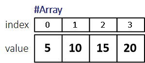
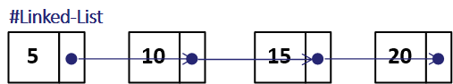
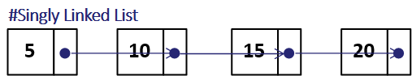
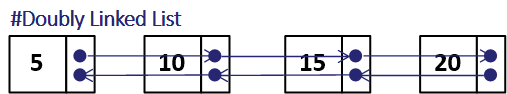
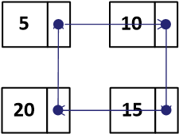
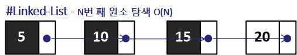
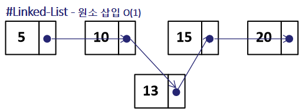
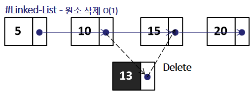

* 개인적인 공부 내용을 기록하는 용도로 작성한 글 이기에 잘못된 내용을 포함하고 있을 수 있습니다.
* 다음 포스팅은 Linked List (연결 리스트) 자료구조의 개념에 대한 내용을 포함하고 있으며 실질적인 구현 및 STL list의 사용 방법에 대한 정보를 원하시는 분은 다음 포스팅을 참고해 주세요.
연관 포스팅
→ Linked List 구현 with C/C++ (미완성)
_Contents
#1 연결 리스트란?
#2 연결 리스트의 종류
#2.1 단일 연결 리스트 (Singly Linked List)
#2.2 이중 연결 리스트 (Doubly Linked LIst)
#2.3 원형 연결 리스트 (Circular Linked List)
#3 연결 리스트의 시간 복잡도
#3.1 N번째 원소 탐색
#3.2 원소 삽입
#3.3 원소 삭제
#4 배열 vs 연결 리스트
#1 연결 리스트란?
연결 리스트 (Linked List) 란 원소들 사이의 선후 관계가 일대일로 대응되는 선형 자료구조 입니다. 즉, 원소를 저장할 때 다음 원소의 위치 정보를 포함 시키는 방식으로 구현되어 있습니다.
원소 5 10 15 20 을 배열 자료구조를 이용해 저장해 보도록 하겠습니다.
int arr[5] = {5, 10, 15, 20};그러면 다음과 같이 인덱스 0번부터 3번까지 원소가 메모리에 연속되게 저장됩니다.

이번에는 연결 리스트 자료구조를 활용해 원소들을 저장해 보겠습니다. C++ STL 의 list 컨테이너를 사용했습니다.
(앞서 미리 얘기했듯이, 이번 포스팅에서는 리스트 자료구조의 사용방법에 대한 내용을 포함하고 있지 않습니다.)
list<int> myList {5, 10, 15, 20};배열과 달리 메모리에 연속적으로 저장되지 않으며, 각 원소가 다음 원소에 대한 위치 정보를 포함하고 있습니다.

#2 연결 리스트의 종류
연결 리스트는 크게 3가지 종류로 구분할 수 있습니다.
#2.1 단일 연결 리스트 (Singly Linked List)
가장 기본적인 형태의 연결 리스트입니다. 각 원소가 다음 원소의 주소의 정보를 포함하고 있는 연결 리스트 입니다.

#2.2 이중 연결 리스트 (Doubly Linked List)
각 원소가 이전 원소의 주소 정보와 다음 원소의 주소 정보를 모두 들고 있는 형태의 연결 리스트 입니다.
단일 연결 리스트와 달리 각 원소 마다 메모리를 하나 씩 더 사용해야 한다는 단점이 있습니다. C++ STL List 컨테이너는 이중 연결 리스트로 구현되어 있습니다.

#2.3 원형 연결 리스트 (Circular Linked List)
마지막 원소와 첫 번째 원소가 연결되어 있는 형태의 연결 리스트입니다.

#3 연결 리스트의 시간 복잡도
#3.1 N번째 원소 탐색
연결 리스트에서 N번째 원소를 탐색하기 위해선, O(N)의 시간이 소요됩니다. O(1)에 바로 원소에 접근할 수 있는 배열과 달리 상당히 비효율 적 이라고 할 수 있습니다.
원리는 어찌보면 당연한데 {5, 10, 15, 20} 의 원소가 저장된 연결 리스트에서 원소 15를 탐색하기 위해선 첫 번째 원소인 5부터 순차적으로 탐색해 나가야 되기 때문입니다.

#3.2 원소 삽입
연결 리스트에서 원소를 추가하는 연산은 O(1)의 시간의 소요됩니다. 예를 들어 원소 10과 15 사이에 13 이라는 원소를 새로 추가해 보도록 하겠습니다.
10이 가리키는 주소를 15의 주소에서 13의 주소로 변경하고 13이 가리키는 주소를 15로 변경하기만 하면 됩니다.

#3.3 원소 삭제
원소 삭제 연산 또한 O(1)의 시간이 소요됩니다. 원소 13을 삭제하는 상황을 예시로 들어보면 원소 10이 가리키는 주소를 13에서 15로 변경해 주기만 하면 됩니다. 물론 연결 리스트를 실제로 구현할 시 원소 13은 가비지 값이 되기에 따로 처리해 주어야 합니다.

#4 배열 vs 연결 리스트
마지막으로 배열과 연결 리스트를 비교해 보고 마치도록 하겠습니다.
| Array | Linked List | |
| K 번째 원소 접근 | O(1) | O(K) |
| 원소 삽입 & 삭제 | O(N) | O(1) |
| 메모리 배치 형태 | 연속 | 불연속 (노드 형태) |
| Overhead | X | O(N) |
* Overhead (추가 필요 공간) - 앞서 설명했듯이 연결 리스트는 각 원소가 다음 혹은 이전의 주소값을 포함하고 있습니다.
따라서 32bit 컴퓨터의 경우엔 4Nbyte 64bit 컴퓨터의 경우엔 8Nbyte의 메모리 공간이 추가로 필요합니다.
정리하자면 배열은 원소에 접근하는 데는 효율적이지만 원소 삽입 & 삭제에 있어서는 비효율적입니다.
반대로 연결 리스트는 원소에 접근하는 데는 비효율적 이지만 원소 삽입 & 삭제는 O(1)으로 효율적입니다.
따라서 원소의 삽입과 삭제가 빈번하게 일어나는 경우에는 연결 리스트 사용을 고려해 보는 것이 좋습니다.